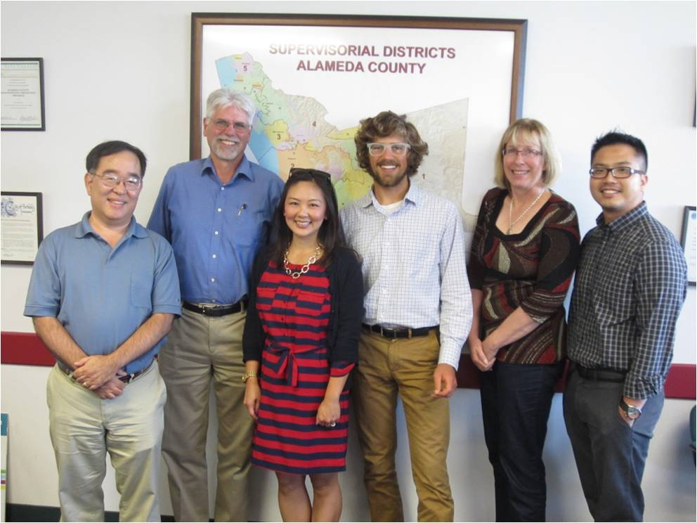
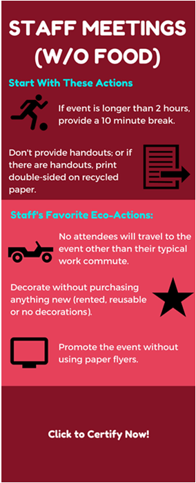
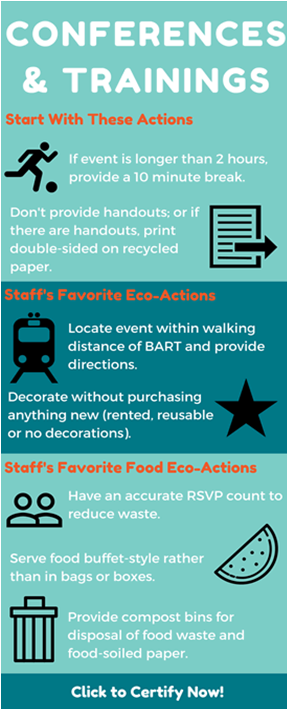
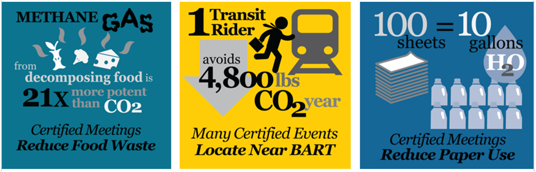
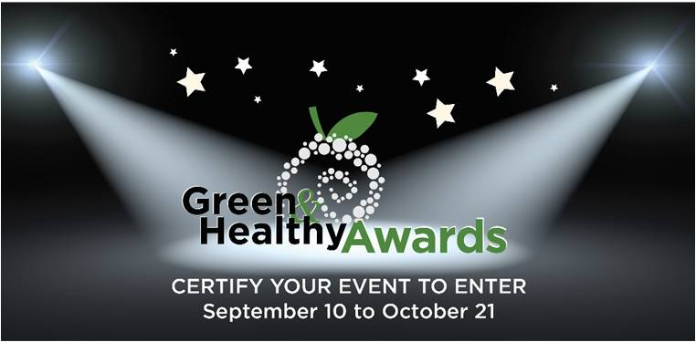
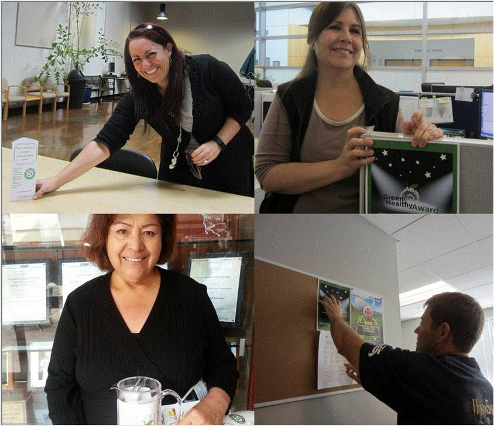
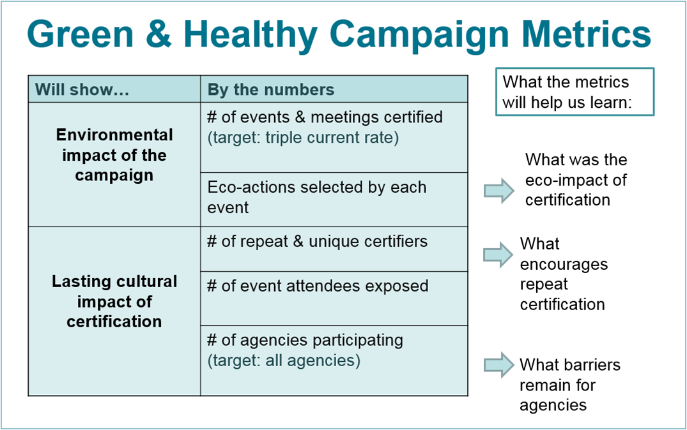
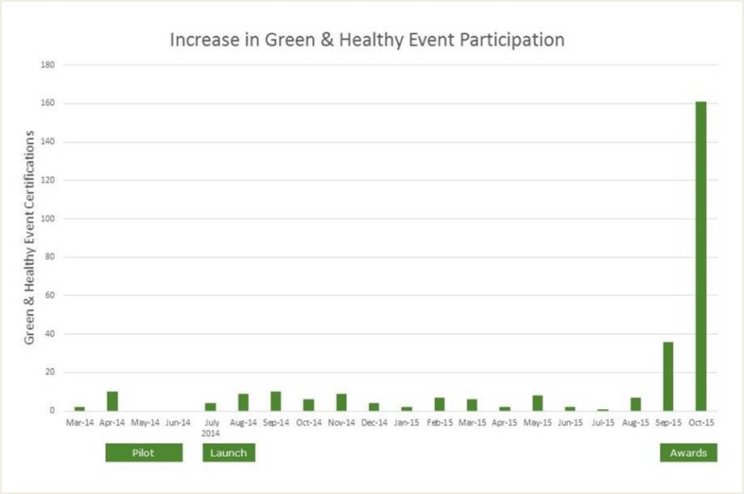

Alameda’s Green Purchasing Program
This innovative green purchasing program engaged hundreds of event planners and over 18,000 event participants to build a new county culture of sustainable and healthy gatherings in Alameda County, California. In only six weeks, its promotion competition enrolled 192 events and meetings, reaching over 9,200 attendees with model green & healthy practices.
Background
Note: To minimize site maintenance costs, all Tools of Change case studies are written in the past tense, even if they are ongoing – as is the case with this particular program.
In 2010, Alameda County (California, USA) set an ambitious ten-year Climate Action Plan for Government Services and Operations to achieve a minimum 15% reduction in operational greenhouse gas emissions. Full implementation would require significant culture shifts in the County, including the purchasing choices of decentralized divisions and employees as they planned the many meetings and events crucial to serving their community. Food and beverage purchasing, paper and supplies ordering, business travel, and waste generation were all impacted by how events and meetings are conducted. These behaviors were difficult to shift, as decision-making about them was decentralized across the entire organization.
The County’s Climate Executive Committee selected “greening County-sponsored events” as one of five cross-agency climate initiatives to be launched in 2014 by employee teams. A cross-agency team was formed to develop guidance that would be effective across the County’s twenty diverse agencies. The team, chaired by staff from the County Library and Community Development Agency, included staff from seven county agencies; the Sustainability Program provided research and administrative support.

The cross-agency climate team brought together representatives from seven agencies: County Administrator, Community Development, Health Care Services, General Services, Library, Sheriff, and Social Services.
Setting Objectives
The overall Green & Health Events & Meeting program had two over-arching goals:
- Develop a framework for climate-friendly events and meetings at the County, in order to reduce environmental impacts of decentralized purchasing choices
- Engage employees across the county – including all 20 Alameda County agencies – to participate in the program and certify meetings & events as Green & Healthy
In addition, a key objective of the Green & Healthy Awards promotion was to triple the highest certification monthly figure to-date by certifying 40 events during the six-week contest in the fall of 2015.
Getting Informed
Over nine months the cross-agency team researched approaches to greening events and meetings. They studied external models and current practices and met with diverse event planners to determine the most effective way to “green.” Based on event planner input and best practices at area institutions, the team developed and refined a checklist of eco-actions and related resources, as described in more detail below. The team decided to integrate the County’s physical activity and nutrition guidelines to ensure events were both green and healthy.
Through four focus groups, 60 survey respondents and a handful of high-level stakeholder interviews, it was determined that Alameda County employees responded well to:
- Competition
- Word of mouth (there was an implicit trust of messages that came from fellow employees)
- Personal benefits (e.g., information on healthy habits)
- “Bite-sized” requests
They were deterred or worried by:
- Taking action without explicit approval
- Actions that took a long time or didn’t seem “doable”
Delivering the Program
In order to effectively engage employees in culture change, the Sustainability Program welcomed them into the process of devising climate action strategies, in cross-agency teams. (Building Motivation, Engagement and Habits Over Time)
The cross-agency green events team, with input from employee purchasers, developed a certification process for events and meetings. The certification process brought together everyday operational sustainability shifts into a single, actionable checklist for employees to use when planning any gathering, from a weekly staff meeting to a large community expo. Each required or recommended “eco-action” advances the Climate Action Plan. For example, a prohibition on bottled water at events helped reduce the climate impact of the supply chain and reduced inputs to the waste stream. (Checklists)
The certification process was piloted with events in several agencies and then the checklist was refined based on feedback from the pilots. Once it was ready for county-wide launch, the team promoted the new program via county-wide emails, a presentation to County department heads, and a training for about 50 agency designees.


Six “Easy Certification Guides” (two are pictured above) summarized the most common eco-actions chosen for each type of event or meeting, in a fun, accessible format.

Sharing the environmental impact of event-related actions through infographics helped to communicate the importance of certification.
The Competition
The certification process was deemed easy and useful by the pilot testers and early adopters, but only about 10 events per month were being certified. Participation had to be scaled up to maximize benefits. At the same time, the Executive Committee realized that Climate Action Plan implementation needed to include broader employee engagement to reach the full potential of environmental benefits. The Green & Healthy certification was the first initiative selected for a county-wide employee engagement campaign because of its measurability, its accessibility to employees at all levels, and its potential to reach large numbers of employees and members of the public as event attendees.
A six-week contest was designed to recognize and celebrate employees that certified events and meetings through the program. To encourage broad-based participation, the agency “Green Machine” award was based on the number of staff who had certified events rather than on the number of certified events. Motivated employees reported that they actively recruited others to participate and certify in order to win. (Competitions, Norm Appeals, Recognition, Word of Mouth)

The Green & Healthy Awards celebrated event planners that chose to certify their events as Green & Healthy in a 2-week contest.
Trendsetters
In addition, a Trendsetter award was offered for the first person to certify in each agency. Trendsetters were then asked to spread the word to colleagues, put up signs, and encourage others in their agencies to participate. (“Block” Leaders, Norm Appeals, Word of Mouth).
The names and photos of all Trendsetters were used in email outreach to show ease of use in every agency.

Organizers found leaders and trendsetters within agencies, and asked them to spread the word to colleagues, put up signs, and encourage others to participate.
Supporting Approaches
Visibility of participation was further heightened through pictures of award winners and green events. These were solicited by offering a “Shutterbug” award for Best Photo, and were featured prominently in outreach as evidence of enthusiastic participation. The winning certifiers and agencies were also celebrated at an Awards Ceremony. Winners “walked the green carpet” to accept certificates, and learned from each other about innovative ways to green events. (Feedback and Recognition; Norm Appeals; Vivid, Personalized, Credible, Empowering Communication; Word of Mouth)
Program staff also spent a full day visiting Trendsetters and other certifiers with posters, table tents, and reusable pitchers that could be used to spread the word about the contest.
Friendly competition was stoked with emails personalized to each agency. The emails mentioned agency standing, and whether a competitor was close to overtaking the lead, to encourage more certifications. The day this segmented email went out set the record for most certifications in a single day. (Competition)
While the program focused on County employees, it contained an element that reached into the local business community as well. It promoted patronage of local catering businesses certified as Green Businesses or Small, Local & Emerging Businesses (SLEB) by providing online lists of these businesses to planners. It also encouraged local catering businesses and other service providers to offer green and healthy options to county and other customers by empowering catering purchasers with lists of “green” practices.
During this period, the Sustainability Program began recording and reporting standard climate action progress metrics to each agency through agency reports. These rolled up into a climate dashboard which tracked agency and county-wide performance on a number of metrics, including the number of green & healthy events certified. These metrics were also reported to the Climate Executive Committee. (Building Motivation, Engagement and Habits Over Time)

Winners “walked the green carpet” to accept certificates
Program staff also spent a full day visiting Trendsetters and other certifiers with posters, table tents, and reusable pitchers that could be used to spread the word about the contest.
Friendly competition was stoked with emails personalized to each agency. The emails mentioned agency standing, and whether a competitor was close to overtaking the lead, to encourage more certifications. The day this segmented email went out set the record for most certifications in a single day. (Competition)
While the program focused on County employees, it contained an element that reached into the local business community as well. It promoted patronage of local catering businesses certified as Green Businesses or Small, Local & Emerging Businesses (SLEB) by providing online lists of these businesses to planners. It also encouraged local catering businesses and other service providers to offer green and healthy options to county and other customers by empowering catering purchasers with lists of “green” practices.
During this period, the Sustainability Program began recording and reporting standard climate action progress metrics to each agency through agency reports. These rolled up into a climate dashboard which tracked agency and county-wide performance on a number of metrics, including the number of green & healthy events certified. These metrics were also reported to the Climate Executive Committee. (Building Motivation, Engagement and Habits Over Time)
Financing the Program
Program implementation costs were covered under the Sustainability Program budget. Materials costs for the Awards contest are shown below.
|
Category
|
Item
|
Cost ($US)
|
|
Award Promotion
|
Green & Healthy Awards website, reusable for future campaigns
(IT design, hosting, and support)
|
$3,000
|
|
Awards promotional materials
(50 reusable water pitchers with program logo)
|
$855
|
|
Travel within county for presentations and site visits
(Electric vehicle and transit)
|
$160
|
|
Supplies and in-house printing
(Flyers and certificates)
|
$75
|
|
Award Event
|
Awards ceremony
(Room & tech rental, food & drink)
|
$1,200
|
|
Prizes
(Mugs with tea, healthy snack bars)
|
$285
|
|
Total
|
$5,575
|
Measuring Achievements
Internal environmental impact calculations for event metrics provided cumulative impact figures for reductions in resource use associated with changed purchasing decisions.

Metrics that Mattered: This table shows how progress was measured, and how it would advance larger goals.
Feedback
In addition to the Green & Healthy Awards process, regular emails provided participants with information about program progress within each agency.
Results
Between March 2014 and Summer 2016, over 18,230 event attendees had been exposed to green and healthy practices, through certification of 298 county events and meetings. Each event took steps to reduce paper handouts; increase purchase of sustainable, healthy food; switch to reusable or compostable food service ware; encourage clean business travel; and/or implement a number of other sustainable steps.
The Competition
The Green & Healthy Awards promotion wildly exceeded its goals. The average rate of certification was ten events per month prior to the campaign, and the goal was set to triple the highest monthly figure to certify 40 events during the contest. Ultimately, 192 events and meetings were certified in only six weeks, with 144 brand-new event planners from all 20 county agencies participating. Through these events, 9,248 event attendees – employees and members of the public – were exposed to green & healthy practices in everyday county operations.

The program’s environmental impact calculations show that events certified during the contest conserved over 1,300 gallons of water simply by avoiding the use of paper plates. Just by avoiding the use of bottled water in events during the contest, 4.7 barrels of oil were saved.
Another result of the outreach was the creation of a contact database of 550 employees in all agencies who plan events and meetings, which helps address the challenge of identifying and reaching the right audience for this program.
Contacts
Sarah Church & Emily Sadigh
Alameda County Sustainability
acsustain@acgov.org
510-208-9654
http://acsustain.org
Notes
This case study is based on a case prepared by the Sustainable Purchasing Leadership Council (SPLC.) That report is publicly available at http://www.acgov.org/sustain/documents/casestudy_2016splc-greenandhealthy.pdf
Lessons learned
Bring your audience in to lead the design process. The audience for this effort was made up of decentralized event planners all over the County. The decision to engage this audience by having them lead the process through a cross-agency team was a key to success. If the County had simply borrowed a checklist from another institution, it may have been less applicable to the context and more difficult to implement. Engaged employees were also able to ask for honest feedback from their colleagues during pilot testing, which helped to make the program more streamlined and user-friendly.
The high level of participation during promotion shows the success of the cross-agency team that developed the certification process. Certification was straightforward and meaningful enough to effectively engage employees over time, and support a diversity of greening strategies at events all over the county.
Challenges to Quantifying Impact: Calculating environmental impacts was a challenge due to lack of marketplace information on converting purchasing changes into hard environmental impact figures. The calculations above required more research than anticipated. For example, major manufacturers were often unable to share environmental metrics for their items. Having done this research, organizers can now obtain a more robust calculation of program impact.
Longer-term impacts or “stickiness” has been challenging to measure. In an effort to welcome more participation, event planners participating in the Green & Healthy Awards were allowed to pre-certify events that happened as late as January 31, 2016. As expected, few new certification applications were submitted in December and January because events happening then had already been certified during the contest.
Further, it has been observed that, without reminders, event planners often do not continue to certify recurring events, even though they have already shifted practices and simply must fill out the short online form to certify.